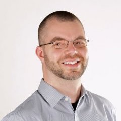

Keynote
 | Prof. Dr.-Ing. Benhard SitohangBandung Institute of Technology |
Benhard Sitohang is a full professor in the School of Electrical Engineering and Informatics, Institut Teknologi Bandung (ITB). He is also head of the Knowledge and Software Engineering research group in ITB. He completed his PhD at Universite des Sciences et Techniques du Languedoc (USTL), Database Systems/Informatics, Montpellier in France. He received his masters degree from Master on Informatics (Diplome d’etude Approfondie/DEA), Database Systems/Informatics, Universite des Sciences et Techniques du Languedoc (USTL), Montpellier – France.
His research interests include Public Query language, Syntax of query and database engine, Distributed Database System (especially in Fragmented Database Systems), and Data Warehouse & Data Mining.
 | Prof. Dr. A Min TjoaVienna University of Technology |
A Min received his PhD in Computer Science at the Johannes Kepler University (Linz, Austria) in 1979. He is a full professor at the Vienna University of Technology for Software Technology since 1994 after being a full professor at the University of Vienna for Information Systems (1988-1994) and Informatics (1982-1988).
He founded the research centre SBA Research together with Edgar Weippl and Markus Klemen.
A Min is General Chair of DEXA 2019, PC Chair of SOFSEM 2018, Co-Chairperson of CD-MAKE 2019. He is the Vice-President of Infoterm (International Information Center for Terminology) since 2010. Since 2008, he has been the Austrian delegate for the United Nations Commission on Science and Technology for Development (CSTD). He was the Chairperson of UN-CSTD for the period 2018/2019, being its vice-chairperson for 2015/16, 2016/2017, 2017/2018 and for the current period 2019/2020.
He was awarded the Honorary Doctorate of the Czech Technical University in Prague and the Honorary Professorship at the University of Hue (Vietnam).
A Min’s current research addresses Linked Open Data, Privacy and Transparency, ICT for SDGs.
|  | Christoph Treude, Ph.D.The University of Adelaide |
Christoph Treude is a Senior Lecturer in Software Engineering in the School of Computing and Information Systems at the University of Melbourne. The goal of his research is to improve the quality of software and the productivity of those producing it, with a particular focus on getting information to software developers when and where they need it. His research combines empirical studies with the innovation of tools and approaches that take the wide variety of natural language artefacts in software repositories into account. He has authored more than 100 scientific articles with more than 200 co-authors, and his work has received an ARC Discovery Early Career Research Award (2018-2020), industry funding from Google, Facebook, and DST, as well as four best paper awards including two ACM SIGSOFT Distinguished Paper Awards. Prior to joining the University of Melbourne, Christoph Treude held a Senior Lecturer position at the University of Adelaide and worked as a postdoctoral researcher at McGill University, the University of São Paulo, and the Federal University of Rio Grande do Norte.
He currently serves as a board member on the Editorial Board of the Empirical Software Engineering journal and was general co-chair for the 36th IEEE International Conference on Software Maintenance and Evolution.